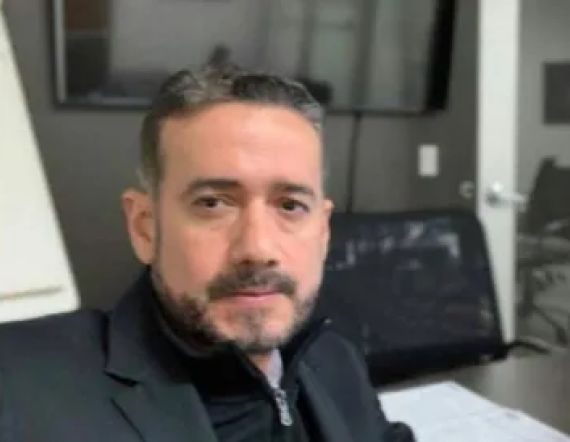

About
Fundamental Skill Set
Proven ability as an independent worker,
capable of performing as a team player
with clear leadership abilities. Task
oriented and problem solving, capable of
working on hostile environments. Strong
analytical skills. Hands-on, cost-driven,
very proactive and self motivated.
Proven ability as an independent worker,
capable of performing as a team player
with clear leadership abilities. Task
oriented and problem solving, capable of
working on hostile environments. Strong
analytical skills. Hands-on, cost-driven,
very proactive and self motivated.
Strong expertise in accounting and
financial reporting (USGAAP/IFRS)
obtained through auditing several
multinational companies in 14 years.
Expertise in Accounting Matters for a
Company in USA.
Expertise in Budget preparation and
control. Ability to maximize profits
through achievements in financial
management, cost reduction and tax
strategy. Strong qualifications in
business planning and staff
development / leadership.
Crisis Management in a complex
environment such as high inflationary
economy, with foreign currency
exchange control, labor conflicts,
complex cash flow due to business
interruption.
Ability to quickly learn the intricacies of
diverse industries.
Vast experience handling confidential
issues, high degree of discretion, mature
critical judgment, and tact on handling
sensitive matters. Outstanding
communication skills and work ethics.
Further Training
- Risk Management – KPMG Venezuela
(06-1994) - Investigation and Developments Costs –
KPMG Venezuela (08-1995) - Accounting Change – KPMG Venezuela
(08-1995) - Professionals Skills - KPMG Venezuela
(09-1995) - Integration of Audit and Information
Technology - KPMG Venezuela (09-
1997) - Authentication of Capital - KPMG
Venezuela (02-1998) - Inventories and Purchasing
management - KPMG Venezuela (06-
1998) - Activities Based Costs - KPMG
Venezuela (08-1998) - Manufacturing Production System and
Distribution Requirements Planning -
KPMG Venezuela (07-1998) - Professionals skills advanced - KPMG
Venezuela (08-1999) - Fraud - KPMG Venezuela (10-1999)
- Experienced In-charge (Consumer
Products) - KPMG Venezuela (11-1999) - Business Measurement Process Partner
and Manager Workshop - KPMG
Venezuela (04-2000) - Business Process Analysis - KPMG
Venezuela (10-2000) - Training for Managers - KPMG
Venezuela (11-2001) - Sarbanes-Oxley and COSO Training-
KPMG Venezuela (06-2003) - Effective Coaching - KPMG Venezuela
(05-2003) - Train the Trainer Update Partners and
Manager – KPMG US, Miami (05-2005) - Training in IFRS - KPMG Venezuela
(06-2005) - Train the Trainer Update EICU – KPMG
US, Miami (07-2005) - US GAAP Training- KPMG Venezuela
(12-2005) - US GAAP Advanced – KPMG
Venezuela (02-2007) - Updating in IFRS - KPMG Venezuela
(09-2007) - SAP-PS - KPMG Venezuela (09-2007)
Our Team
Fernando Azuaje a
professional with
more than 20 years
of experience.
Professional Experience
CFO of Ceramica Carabobo, S.A.C.A.
(Ferbuary 2011 - Currently). The largest
Manufacturer Company of
Ceramic Tiles in Venezuela
Director of the following Departments:
Accounting, Costs Accounting,
Comptroller, Treasury, Financial
planning & budgeting, Tax, Information
Technology, Internal Legal Advisory and
Credit and Collections. Responsible for
45 professionals.
Supervisor of Finance and Accounting
matter of PAN AMERICAN CERAMICS
since 2011, a subsidiary of Ceramica
Carabobo located in Mira Loma,
CALIFORNIA, USA.
CFO OF LOGIMAR, C. A.
(July 2010 – February 2011).
A Maritime Agent Company
Manager of the following Departments:
Accounting, Invoicing, Credit and
Collections and Procurement.
Responsible for 15 professionals.
CFO of DP World Boulton
Puerto Cabello, C. A. (May 2008 -
July 2010) – A Terminal Port
Operator, subsidiary of
Dubai Port World.
Manager of the following Departments:
Accounting, Invoicing, Credit and
Collections, Procurement, Human
Resources, Financial planning &
budgeting, and Information Technology.
Responsible for 30 professionals.
Audit Director of KPMG Venezuela
(June 1993 - May 2008) -
A professional firms providing Audit,
Tax and Advisory services,
part of KPMG GLOBAL NETWORK
Director of Financial Statement Audit
process of several companies that
operate in segment such as Market of
Consumer Products, Logistics, Food and
Drinks, Chemicals, Manufacture and
Distribution. In-Charge of Professional
Development for Valencia and
Barquisimeto Offices. Statistical
Sampling Specialist in KPMG
Venezuela.
Education:
- Universidad Tecnológica del Centro
UNITEC – Postgraduate Diploma
in Finance (2009). - IESA – Preparation and Evaluation of
Projects (2009). - KPMG US, Miami - Statistical Sampling
Specialist (2006). - Carabobo University – Public
Accountant (1997).
Other Experience
- Vice-President of the Finance
Committee of the Carabobo State
Industrial Chamber (Camara de
Industriales del Estado Carabobo). - Association of Executives of the State of
Carabobo (Asociación de Ejecutivos del
Estado Carabobo) – Treasurer and
Member of the Board of Director 2015-
2017. - Venezuelan Federation of Public
Accounting, Member of the Sub-board of
Audit Standards (2000-2001). - Acted as Trainer in accounting and
auditing training courses imparted in
KPMG Venezuela, in several companies
client of KPMG, Carabobo University,
Certified Public Accountants´
Association of State of Carabobo and
Certified Public Accountant´ Association
of State of Aragua.